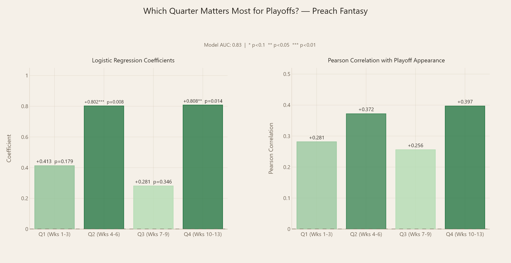
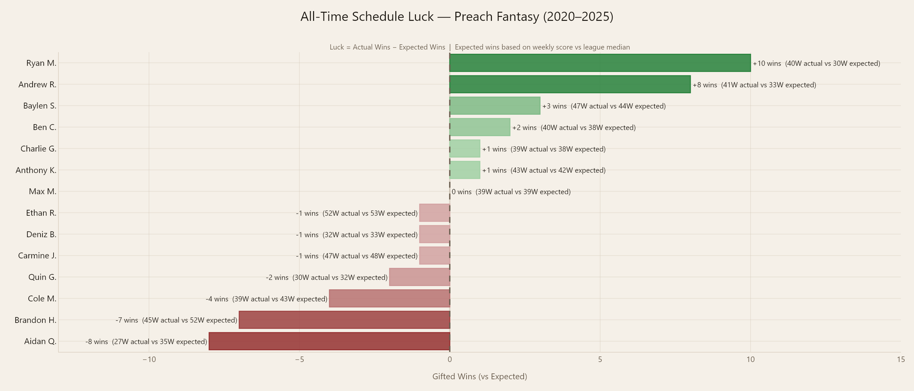

Fantasy Football Analytics Platform
A full-stack fantasy football web application built from scratch with no prior web development experience. Six seasons of league data transformed into interactive analytics: custom-built metrics, a machine learning similarity engine, and per-manager dashboards, deployed live and accessible to all league members.
Most fantasy platforms give you wins, losses, and points, and nothing else. They don't tell you whether a team got lucky with their schedule, whether a manager is genuinely dominant or just fortunate, or how a current team compares to the best and worst teams in league history. Standard tools also have no memory: each season starts fresh with no cumulative context.
The goal was to treat the league like a real sports organization, with career statistics, historical context, and analytics that actually separate performance from luck.
"How do you separate genuine performance from luck in a format where schedule randomness plays a massive role in outcomes?"
Clean separation between data processing, application logic, and presentation. Python handles all analytics and visualization generation; Flask routes serve dynamic pages from pre-processed data; HTML templates handle display with Bootstrap for layout.
Data Layer
CSV files for matchup history and manager stats. Python scripts for metric calculation, visualization, and similarity analysis.
Application Layer
Flask backend with 15+ routes. Pandas for data manipulation. Plotly for interactive charts. Visualization pipeline runs automatically on startup.
Presentation Layer
Bootstrap HTML templates. Plotly charts embedded as HTML. Deployed on Render via GitHub with render.yaml configuration.
Rather than surface stats, the platform introduces three original performance metrics designed to isolate real signals from the inherent randomness of fantasy scheduling, plus a dedicated draft slot analysis framework.
Dominance Score
A z-score measuring how offensively dominant a team was relative to the league in a given season. 0 is league average; positive values indicate above-average scoring.
z = (PF/G - league_mean) / league_stdLuck Score
Measures how favorable a team's schedule was based on points-against per game. A high positive score means the schedule actively worked against them; negative means the schedule was a gift.
z = (PA/G - league_mean) / league_stdSchedule Luck Rating
Quantifies career schedule impact by comparing actual wins to expected wins if the team had played the league median score each week. Positive = schedule gifted wins; negative = wins were taken away.
luck = actual_wins - expected_winsDraft Slot Analysis
Manager-quality-adjusted analysis of draft slot performance. Accounts for stronger managers clustering in certain slots by using each manager's career Dominance Score as a quality baseline before measuring slot over/underperformance.
adj = actual_dom - expected_domThe most technically complex feature matches each 2025 playoff team against every team in league history using a weighted Euclidean distance algorithm. Features are normalized via StandardScaler, custom weights reflect each metric's relative importance, and the system returns the top 3 most similar historical teams with a similarity score out of 100.

2025 playoff team similarity cards. Each card shows the 3 most statistically similar teams from league history, ranked by weighted Euclidean distance across 7 performance features.
| Feature | Weight | Reasoning | Relative Importance |
|---|---|---|---|
| Late Season PF/G (Wks 10-13) | 2.0 | Best predictor of playoff form | |
| Season PF/G | 1.7 | Overall scoring ability | |
| Win Percentage | 1.4 | Season-level consistency | |
| Luck Score (LR Z-Score) | 1.1 | Schedule context | |
| Dominance Score | 0.9 | Relative scoring dominance | |
| Draft Slot | 0.6 | Roster construction context | |
| Point Differential | 0.4 | Secondary performance signal |
The algorithm also handles non-standard playoff structures. The 2020 season had 14 teams with 4 playoff rounds; 2021 included a wildcard game for two managers, requiring custom normalization logic to make historical comparisons meaningful across seasons with different formats.
Every manager has a dedicated profile page generated dynamically from the data, including a career summary with rank-among-peers coloring, a full season-by-season record table, and interactive Plotly visualizations covering win percentage trends, scoring distributions, and head-to-head records. The visual below shows the league-wide view: an all-time head-to-head matrix across every pair of managers.

All-time head-to-head matrix (2020-2025). Green cells indicate winning records, red losing. Color intensity reflects dominance.
Six seasons of draft and performance data evaluated on two dimensions: raw playoff conversion rate and manager-quality-adjusted dominance score. Adjusting for manager quality is critical since stronger managers have historically clustered in certain slots, which can artificially inflate or deflate a slot's apparent value.

Playoff rate by draft slot. Slots 1, 7, 8, 11, and 13 show the highest historical playoff conversion rates at 83.3%.

Manager-quality-adjusted dominance score by draft slot. Controls for stronger managers clustering in certain positions over time.
A logistic regression tested which part of the season best predicts playoff qualification, using average points scored each quarter as independent variables. The model achieved an AUC of 0.83, indicating strong predictive accuracy.

Logistic regression coefficients and Pearson correlations for each quarter as predictors of playoff appearance. Q2 (Wks 4-6) and Q4 (Wks 10-13) are statistically significant at p<0.05. Q3 (Wks 7-9) is the weakest predictor.
By comparing each manager's actual wins against expected wins, calculated by measuring weekly scores against the league median each week, the platform quantifies exactly how much the schedule has helped or hurt each manager over their entire career.

All-time schedule luck rankings (2020-2025). Luck = actual wins minus expected wins against the weekly league median.
Six seasons of data surfaced patterns that standard platforms would never show. Some of them were surprising.
When adjusting for manager quality, slots 9-14 consistently outpaced expectations while slots 1, 3-6 fell short. Early picks carry more pressure and leave less room to exceed what's expected of them.
Weeks 4-6 and 10-13 are the only statistically significant predictors of making the playoffs (p<0.05, AUC 0.83). The middle stretch of the season (Q3) is nearly irrelevant in terms of predictive power.
Some managers are significantly better than their record shows. Others have been gifted wins they didn't earn. The luck metric makes that visible for the first time in this league's history.
Single-elimination fantasy playoffs are too luck-dependent for past patterns to be reliable guides. That said, the 2025 champion's most similar historical team was a prior champion, so it's not useless either.
The most valuable thing a data scientist can build isn't always the most complex model. It's the tool that makes good analysis accessible and interpretable to the people who need it. Building this platform from zero web development experience taught me how to connect Python and statistical modeling to full-stack engineering — and how to ship something people actually use.